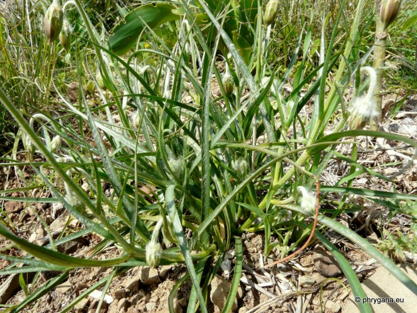

| PHRYGANA | Fauna | Flora | Galles | liste des espèces |
contact -
info - commentaires phrygana1 (at) gmail.com |
| Particularités crétoises | nouveautés | Mines | ressources naturelles |
| Scorzonera cretica WILLD. |
| 330 | Flora | ASTERACEAE | Chicorieae CASS. | Scorzonera L. |
|
Scorzonera cretica Melambes (Agios Giorgos) 24 mars 2012 |
| fr: le Scorsonère de Crète | |
| Plante poilue; tiges nombreuses, feuillées, pubescentes | |
| Feuilles: feuilles linéaires (2 - 10 mm de large x 70 - 300 mm de long); pilosité variable | |
| Fleurs: capitule solitaire sur un long pédoncule, 10 -30 mm de long; fleurs ligulées jaunes, souvent rougeâtres sur la face extérieure. | |
| Fruits: 5 - 8 mm, poilus; pappus avec des poils plumeux du pourtour du capitule; akènes intérieur lisses | |
| Hauteur: 5- 45 cm | Type biologique: hémicryptophyte ramifié |
| Floraison: mars avril mai | |
| Altitudes: 1 – 1400 m | |
| Statut en Crète: indigène | |
| Biotopes en Crète: phrygana, olivaies, bords des routes, falaises, collines sèches, dunes maritimes. | |
| Distribution: îles Égéennes, Crète | |
| Usage culinaire : en Crète, les racines sont consommées bouillies | |
|
Scorzonera cretica Melambes (Agios Giorgos) 24 mars 2012 |
|
 Scorzonera cretica Melambes (Agios Giorgos) 24 mars 2012 |
|
Scorzonera cretica Melambes (Agios Giorgos) 24 mars 2012 |
|
Scorzonera cretica Melambes (Agios Giorgos) 24 mars 2012 |
|
Scorzonera cretica Melambes (Agios Giorgos) 02 avril 2013 |
|
Scorzonera cretica Melambes (Agios Giorgos) 02 avril 2013 |
| 13 avril 2013 |
| © paul fontaine -- © Phrygana.eu 2007 -- 2013 |